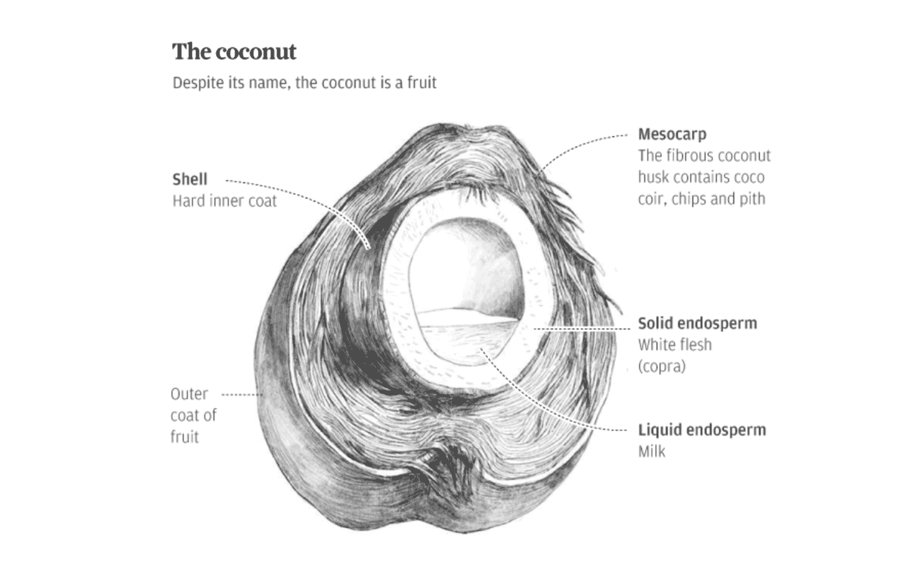
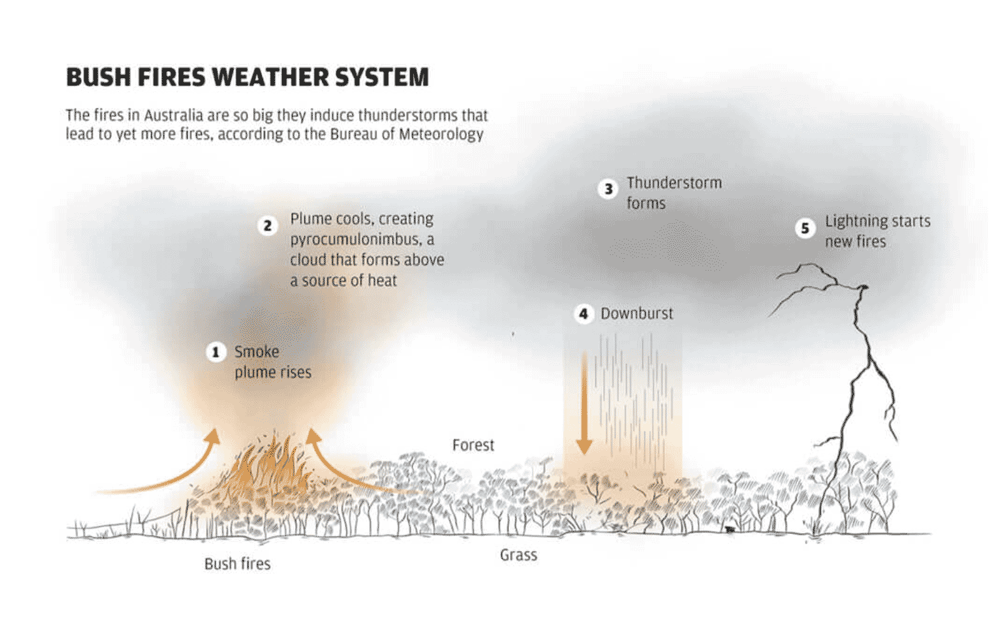
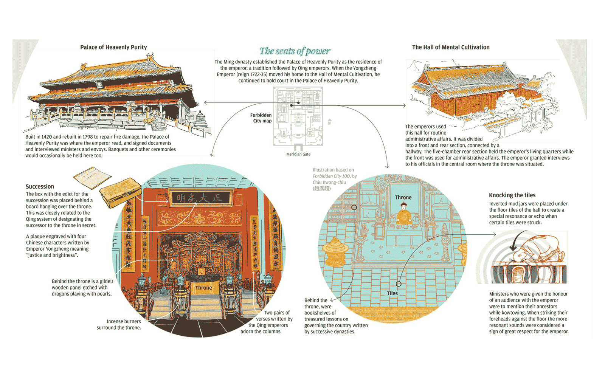
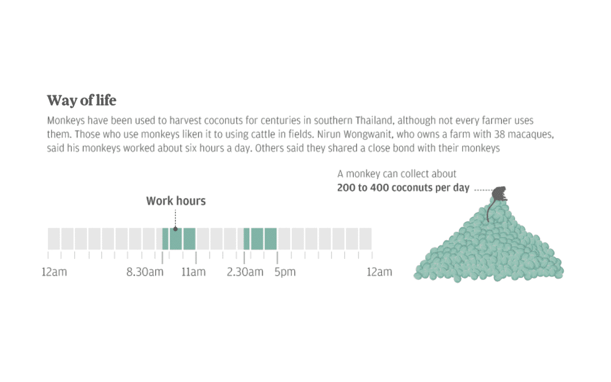
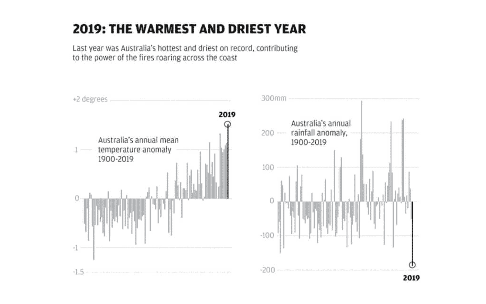
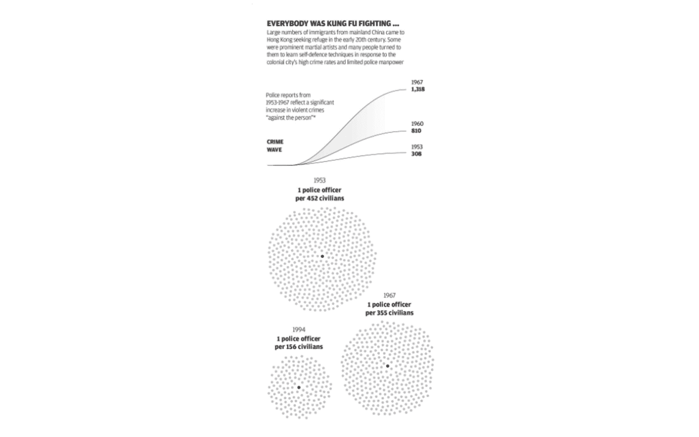
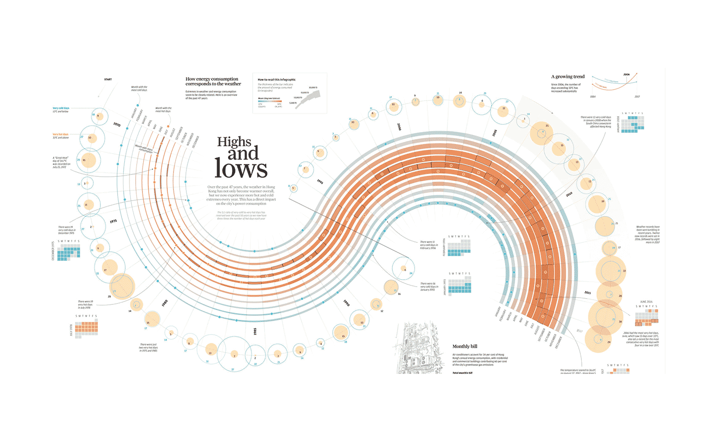

Información en gráficos figurativos

Tradition or exploitation?
Publicado en South China Morning Post.

Apocalypse now
Publicado en South China Morning Post.
How MMA´s roots are in Hong Kong
Publicado en South China Morning Post.

Life inside the Forbidden City
Publicado enSouth China Morning Post.
Información en gráficos no figurativos

Tradition or exploitation?
Publicado en South China Morning Post.

Apocalypse now?
Publicado en South China Morning Post.

How MMA´s roots are in Hong Kong
Publicado en South China Morning Post.

Highs and lows
Publicado en South China Morning Post.